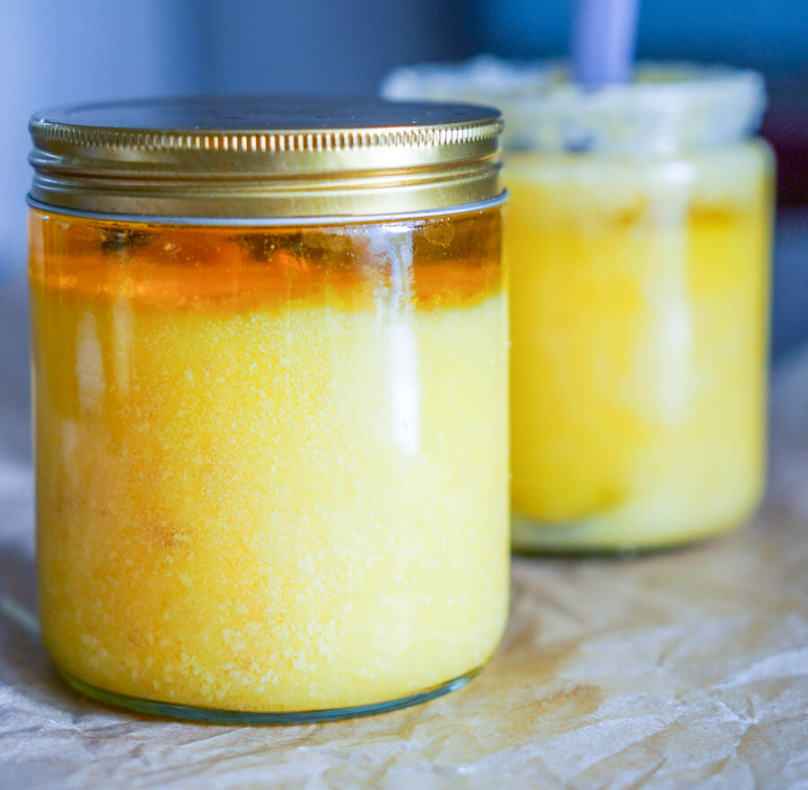

В ПРАкукинге мы верим, что еда должна не только быть вкусной, но и приносить пользу. Хвала кулинарным богам, в нашем случае польза не имеет ничего общего с обезжиренными продуктами и невкусной диетической едой. Мы за настоящую еду. Мы знаем, что у вас часто возникает вопрос: на чем жарить?
Жарка или другая тепловая обработка жиров — процесс, при котором жиры могут окисляться, то есть, терять электрон (=становиться свободными радикалами) и вызывать цепную реакцию окисления, находясь в поисках недостающего электрона. При нагревании жирные кислоты с нестабильной структурой также выделяют токсические вещества — альдегиды, которые накапливаются в организме, со временем запуская разрушительные процессы. Окисленные жиры при регулярном употреблении представляют серьезные риски для развития сердечно-сосудистых заболеваний и системных воспалительных процессов. Окислению подвергаются, прежде всего, полиненасыщенные жирные кислоты из-за своей сложной и несбалансированной химической структуры.
Чтобы минимизировать вероятность употребления окисленных жиров, для жарки используются жиры с наиболее стабильной структурой — то есть с высоким процентом содержания насыщенных жирных кислот. К наиболее стабильным жирам, сохраняющим свою структуру при нагревании, относятся:
Топленое масло — прекрасный жир для готовки. С кулинарной точки зрения, топленое масло — самое универсальное. Большинство продуктов прекрасно с ним сочетаются, в то время как кокосовое масло и животные жиры не всегда сочетаются с другими продуктами, обладая ярким природным вкусом. Кокосовое масло можно купить в магазине, животный жир — у фермера или вытопить самим. Топленое масло тоже продается, но хорошее купить сложно, особенно в России, поэтому мы очень советуем делать его самим.
Топленое масло — это сливочное масло минус молочный белок. И для того, чтобы получить топленое масло, нужно избавиться от белка. Именно поэтому у топленого масла выше температура горения, чем у сливочного, в сливочном горит и чернеет белок. Процесс приготовления очень простой, и домашнее топленое масло гораздо выгоднее, чем хорошее покупное.
Итак, как приготовить дома топленое масло?